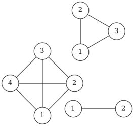

Algorithmes des graphes - Exercices¶
Données valables pour toute la fiche - cellules de code à exécuter

from graphes import Graphe, GrapheOr2
g1 = Graphe(['A', 'B', 'C', 'D', 'E', 'F', 'G', 'H', 'I'])
g1.ajouter_arete('A', 'B')
g1.ajouter_arete('B', 'C')
g1.ajouter_arete('C', 'E')
g1.ajouter_arete('E', 'I')
g1.ajouter_arete('I', 'H')
g1.ajouter_arete('H', 'F')
g1.ajouter_arete('F', 'A')
g1.ajouter_arete('G', 'B')
g1.ajouter_arete('G', 'F')
g1.ajouter_arete('G', 'I')
g1.ajouter_arete('D', 'B')
g1.ajouter_arete('D', 'I')
g2 = GrapheOr2([0, 1, 2, 3])
g2.ajouter_arc(0, 1)
g2.ajouter_arc(1, 2)
g2.ajouter_arc(0, 3)
g2.ajouter_arc(3, 1)
g3 = GrapheOr2(['A', 'B', 'C', 'D'])
g3.ajouter_arc('A', 'B')
g3.ajouter_arc('A', 'D')
g3.ajouter_arc('B', 'C')
g3.ajouter_arc('D', 'C')
from queue import Queue
def parcours_l(g, s):
"""
"""
F = Queue()
dist = dict()
pred = dict()
for u in g.sommets():
dist[u] = float('inf')
pred[u] = None
dist[s] = 0
F.put(s)
# A compléter
while not F.empty():
u = F.get()
for v in g.voisins(u):
if dist[v] == float('inf'):
dist[v] = dist[u] + 1
pred[v] = u
F.put(v)
return dist, pred
Appliquer un algorithme *¶
Appliquer l’algorithme de parcours en largeur sur le graphe g1, à partir du sommet H. Noter à chaque fois les sommets rencontrés ainsi que leur distance.
Appliquer l’algorithme de parcours en profondeur sur le graphe g2. Ce graphe comporte-t-il un cycle ?
Afficher un chemin **¶
Construire le chemin allant d’un sommet origine orig à un sommet s est facile à partir d’un dictionnaire des prédécesseurs pred. En effet, pred[s] permet de retrouver son père, pred[pred[s]] son grand père et ainsi de suite jusqu’à orig où on s’arrête (son père est None).
Dans la version de l’algorithme de parcours en largeur du cours, pred est construit au fur et à mesure de l’exploration du graphe. Pour le parcours en profondeur, on modifie légèrement le code en transformant le dictionnaire deja_vu en pred. Voir le code ci-après.
def parcours_p(g, pred, orig, s):
"""
parcours récursivement, en profondeur, le graphe g, depuis le sommet s.
g: graphe
orig, s: sommets
pred: dictionnaire dont la clé est un sommet et la valeur est son prédécesseur (père)
"""
pred[s] = orig
for v in g.voisins(s):
if v not in pred:
parcours_p(g, pred, s, v)
Compléter la fonction
affiche_cheminci-après, qui prend en paramètres un graphe, un sommet de départu, un sommet d’arrivéevet qui renvoie un le chemin menant deuàvsous la forme d’une liste python.
def affiche_chemin(g, u, v):
"""
g: graphe
u, v: sommets de départ et d'arrivée respectivement
"""
pred = dict()
parcours_p(g, pred, None, u)
if v not in pred:
return None
chemin = [] # contient le chemin existant entre u et v
s_fin = v # sommet d'arrivée
# A compléter à partir d'ici
Afficher le chemin menant de ‘A’ à ‘I’. Quelle est la longueur (nombre d’arête) de ce chemin?
# Test de la fonction affiche_chemin
#affiche_chemin(g1, 'A', 'I')
Le chemin trouvé précédemment est-il le plus court? Justifier la réponse en utilisant un parcours en largeur.
# Réponses
Détection de cycle dans un graphe orienté ***¶
Première idée¶
Une première idée consiste à modifier légèrement la fonction de parcours en profondeur de manière à renvoyer un booléen qui sera à True si on tombe sur un sommet déjà visité.
def parcours_p2(g, s, deja_vu):
"""
parcours récursivement, en profondeur, le graphe G, depuis le sommet s.
g: graphe
s: sommet
deja_vu: dictionnaire de booléen caractérisant le statut d'un sommet
(déjà visité ou non).
"""
if deja_vu[s]:
return True
deja_vu[s] = True
for v in g.voisins(s):
if parcours_p2(g, v, deja_vu):
return True
return False
On écrit une fonction de détection de cycle.
def detect_cycle(g, s):
d = dict()
# à l'origine aucun sommet n'est visité
for v in g.sommets():
d[v] = None
return parcours_p2(g, s, d)
detect_cycle(g2, 3)
False
detect_cycle(g3, 'A')
True
Donner une explication à ces résultats.
Une solution¶
En fait, il faut distinguer les sommets déjà vus: ceux dont l’exploration est en cours et ceux dont l’exploration est terminée. Une façon commune de réaliser la distinction entre les sommets est de les “colorier”:
un sommet non exploré est BLANC;
un sommet en cours d’exploration est GRIS;
un sommet dont l’exploration est terminée est NOIR.
On va modifier quelque peu la fonction parcours en profondeur: le dictionnaire deja_vu sera renommé en couleur. Lors de la visite d’un sommet s:
si
couleur[s]est GRIS, on a découvert un cycle (on renvoieTrue);si
couleur[s]est NOIR, l’exploration est terminée, il n’y a pas de cycle (on renvoieFalse);
Si on passe ces deux tests, s est forcément BLANC, on va donc:
le colorier en GRIS;
visiter récursivement tous ses voisins;
le colorier en NOIR lorsque tous ses voisins auront été explorés et indiquer qu’aucun cycle n’a été trouvé
Coder la fonction parcours_p selon l’algorithme qui vient d’être exposé. Puis tester avec la fonction detect_cycle proposée.
def parcours_p(g, s, couleur):
"""
à compléter
"""
# à compléter
pass
def detect_cycle(g, s):
coul = dict()
# à l'origine aucun sommet n'est visité et sont tous BLANCS
for v in g.sommets():
coul[v] = 'BLANC'
return parcours_p(g, s, coul)
# TESTS - A EXECUTER
#assert detect_cycle(g2, 3) == False
#assert detect_cycle(g3, 'A') == False
#print("Tout semble OK")